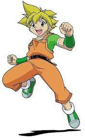

Tyson GrangerTyson Granger,known in Japan as Takao Kinomiya (木ノ宮タカオ Kinomiya Takao) is the main protagonist from the Original Series, consisting of Beyblade, Beyblade: V-Force and Beyblade: G-Revolution. He is a member and leader of the G-Revolutions and the BBA Revolution. His Bit-Beast and Beyblade is Dragoon - one of the 4 Sacred Bit-Beasts. |
||
Kai HiwatariKai Hiwatari (火渡カイ Hiwatari Kai) is one of the deuteragonists from the Original Series, consisting of Beyblade, Beyblade: V-Force and Beyblade: G-Revolution. He is the former leader of the Blade Sharks and current leader of the G Revolutions (English dub only). He is also a former member of the Blitzkrieg Boys. His Bit-Beast and Beyblade is Dranzer - one of the 4 Sacred Bit-Beasts. |
||
|  |
Max TateMax Tate(水原 マックス Mizuhara Max) is one of the deuteragonists from the Original Series, consisting of Beyblade, Beyblade: V-Force and Beyblade: G-Revolution. He is a member of the G-Revolutions and the PPB All Starz. His Bit-Beast and Beyblade is Draciel - one of the 4 Sacred Bit-Beasts. He first appeared in the "Beyblade Fighting Tournament" as just "Max" in August 2000 and much earlier the manga in Volume 1 Chapter 5, released on January 2000. |
|
Ray KonRay Kon (金李 Kon Rei) is one of the deuteragonists from the Original Series, consisting of Beyblade, Beyblade: V-Force and Beyblade: G-Revolution. He is a member of the G-Revolutions and White Tiger X. His Bit-Beast and Beyblade is Driger - one of the 4 Sacred Bit-Beasts. He first appeared in the "Beyblade Fighting Tournament" as just "Rei" in August 2000, though appeared in the manga in mid-late 2000. |
||
KennyKenny (才媛マナブ Saien Manabu) or The Chief (キョウジュ Kyoujyu) is one of the protagonists from the Original Series, consisting of Beyblade, Beyblade: V-Force and Beyblade: G-Revolution. He is a member of the G-Revolutions and the BBA Revolution. He does not have a Bit-Beast and is primarily the Beyblade technician and mechanic of the team (but he has bladed in tournaments before). |
FEEDBACK |
© Rohit Yadav